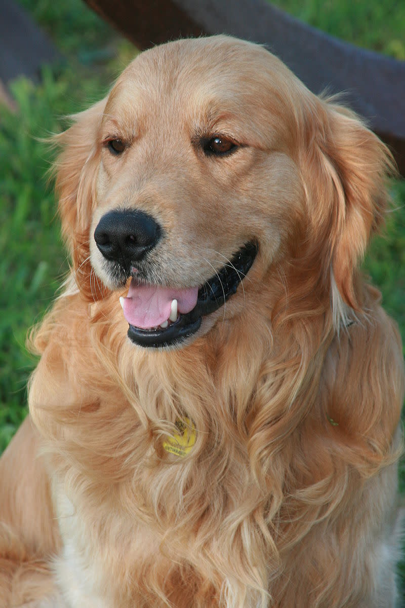

Available Friends

Fuzzy
Fuzzy is 9 Years old, is a pomeranian mix with tons of energey.Loves to play fetch, loves walks and wants all the attention.

Mugsby
Mugsby is a Berniese Mountain dog. She is 9 years old, while she may look young on the outside...she is actually old on the in. Mugsby has a condition named puppyitus. Her condition prevents her from aging.
Butter
Butter is not your average golden retriever...In her younger years she became obsessed with the movie "Air Bud." Her previous owners grew tired of her always trying to impersonate Air Bud. Running into random football fields and basketball courts in hopes of scroing the last goal...Her parents became embarrassed and fed up with her obsession. She is looking for a home that embraces her dream of becoming Air Bud.